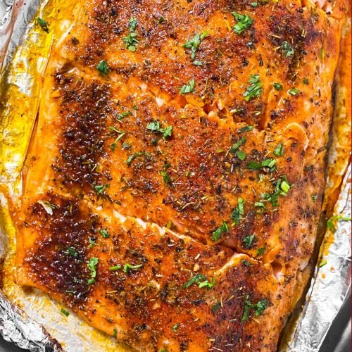

Salmon recipe

Cajun seasoned baked salmon
This salmon recipe is one of the easiest, healthiest weekday dinners!
This recipe is perfect for those who are busy during the week but still need to
prepare dinner for the family.
Ingredients Needed:
- 2 lb Salmon filet
- Old bay seasoning
- Butter
Step-by-step Instructions:
- Preheat oven to 375F
- Melt butter in the microwave and add a healthy amount of oldbay seasoning
- Brush or pour seasoned butter over salmon filet
- Stick in the oven for 30 minutes
- Enjoy!